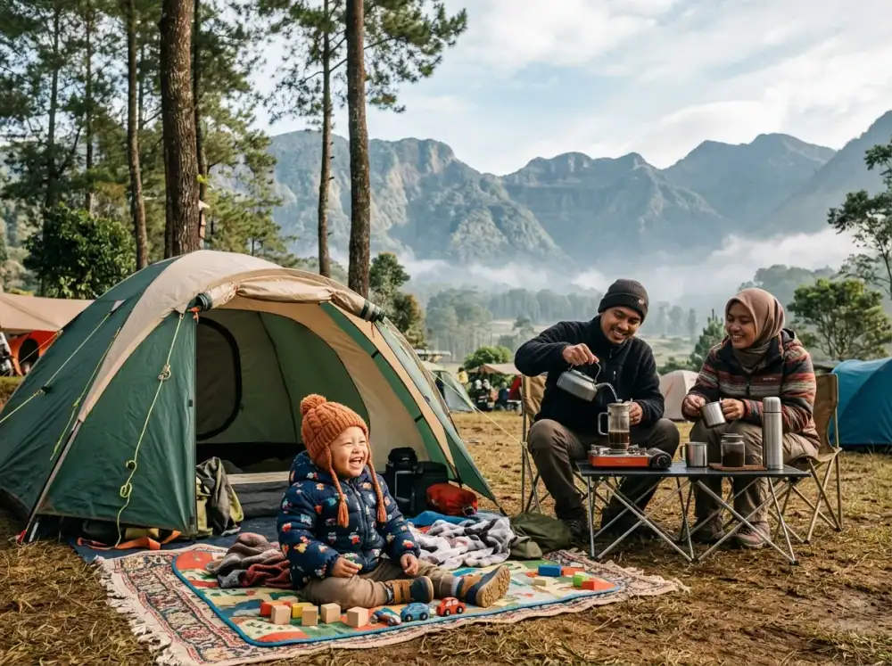

Di era di mana anak usia 2 tahun sudah mahir menggeser layar tablet, ruang gerak balita semakin terkurung di dalam dinding rumah asri atau mall ber-AC. Konsekuensinya? Gejala Nature Deficit Disorder (defisit interaksi terhadap alam) mulai menghinggapi anak-anak yang pada akhirnya memicu gangguan sensorik, alergi kronis, hingga hiperaktif pada layar.
Mengajak balita usia 1 hingga 5 tahun berkemah seringkali menjadi ketakutan tersendiri bagi ibu muda. Takut digigit nyamuk basah, takut masuk angin, hingga alergi kulit. Namun jika dipersiapkan di fasilitas Batu Sunrise Camp yang super aman, alam berubah menjadi sekolah montessori terbaik buatan Tuhan yang akan langsung meledakkan potensi tersembunyi sang anak!
1. Stimulasi Sensorik Total Secara Natural
Taman bermain sintesis berbahan plastik halus tidak akan pernah bisa memberikan ragam tekstur yang kaya seperti lantai sebuah hutan pinus di pegunungan Kota Batu Malang.
- Indera Peraba: Menyentuh batang pinus yang kasar, daun cemara yang runcing (tapi tidak tajam), mencengkeram tanah lembap, serta melangkah di atas hamparan mulsa kering membangun koneksi saraf pada otak kiri anak (pengembangan saraf somatosensorik) yang luar biasa cepat.
- Indera Pendengaran: Gesekan angin di puncak pohon dan bunyi jangkrik mengajarkan mereka kepekaan frekuensi suara organik tanpa amplifikasi bising sirkuit digital.
2. Pengembangan Motorik Kasar yang Tiada Banding
Ruang tamu keluarga yang sempit penuh laci menuntut orang tua terus meneriaki anak "Jangan sentuh! Awas jatuh!". Akan tetapi, padang kemping luas yang diselimuti rumput hijau terawat di Batu Sunrise Camp memberikan proteksi landing yang bersahabat.
Anak Anda bebas berlari zigzag mengejar kupu-kupu liar, menuruni kemiringan bukit yang landai (melatih keseimbangan tulang), atau merunduk mengobservasi semut tanah merayap. Tubuh mereka bergerak ke segala arah secara intuitif yang tak bisa diajarkan dengan alat senam balita kelas mahal manapun.
3. Imunitas Kekebalan Tubuh Anak Tumbuh Berlipat Ganda
Anak kecil yang tak pernah berinteraksi dengan tanah sejatinya ditahan potensi sistem imun alamiahnya. Melalui kontak moderat dengan alam (contoh: kotor di celana lutut bekas merangkak) bakteri-bakteri baik dari tanah akan mulai diperkenalkan kepada mikroba sang balita. Anak-anak yang dibiarkan terekspos alam lapang cenderung lebih jarang mengalami peradangan alergi kulit kronis saat beranjak sekolah SD nanti.
4. Memilih Paket Camping yang Bebas Stress Untuk Ortu
Untuk percobaan pertama keluarga yang belum terbiasa ekstrem, lupakan dulu acara pasak tenda ribet di area *survival*. Coba opsi Paket Glamping Super Family kami:
- Kasur Ekstra Besar (King/Queen Size Bed): Anda butuh proteksi bayi tak terpental. Glamping menggunakan matras *spring bed* mewah hangat lengkap duvet, tanpa risiko masuk angin dingin dari bawah tanah.
- Akses Setrum Listrik Aman Bebas Kabel: Glamping memberikan colokan sterilisator botol minum bayi (bottle warmer) yang bisa ditaruh di nakas tanpa menyita perhatian.
- Sistem Area Pribadi: Balita Anda lebih leluasa berkreasi di kavling tanpa takut diganggu arus lalu lalang jalanan utama pegunungan.
5. Panduan Praktis Berkemah Bawa Balita
Adiel Ebert Nakula Shandy
Pemerhati Eduwisata Anak & Pengelola Batu Sunrise Camp. Merupakan penganut kuat Outdoor Early-Education bagi balita di tengah masifnya gempuran gawai masa kini.